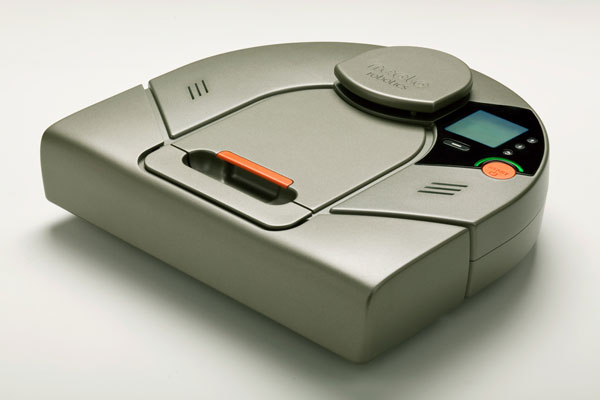

home

Hacking the Neato XV-11...
This wiki will serve as a location to organize the thoughts and progress of anyone working on the XV-11 and its successors.
What is the Neato XV-11 you ask??
The Neato XV-11(
Wikipedia) is a robot which vacuum's your house. It is unlike any other however because it includes a
low cost 360 degree laser distance scanner (LIDAR See
Wikipedia). This can be removed from the XV-11 and used in your own robotics projects or used within the XV-11 with the help of the Robot Operating System (ROS). The pages within this wiki document interfacing methods into the XV-11 and is open to anyone who wants to help.
For $399 you can't find a better robotics platform in my opinion, definitely worth the cost even if you do nothing more than strip it down for parts. You will find it is very well constructed by some people who definitely know about robotics.
Recent Updates:
- Added infos about various other aspect of the lidar beyond its data format (2014/01/10)
- Open source Linux for Neato XV- (5/20/2013) - Bootloader access
- Open source Linux for Neato XV- (2/22/2013)
- Hacking with Neato Firmware v2.6 (11/07/2012)
- Updated XV-11 PCB Information (11/11/11)
- Added descriptions of all known connections to Main PCB
- Added "XV-11 LCD PCB Information" page
- Added LCD PCB EagleCAD files
- Added information regarding the LCD driver
- Added "LIDAR Mechanical Info" page
- Added 2D and 3D CAD files of LIDAR module
- Added wire connector information